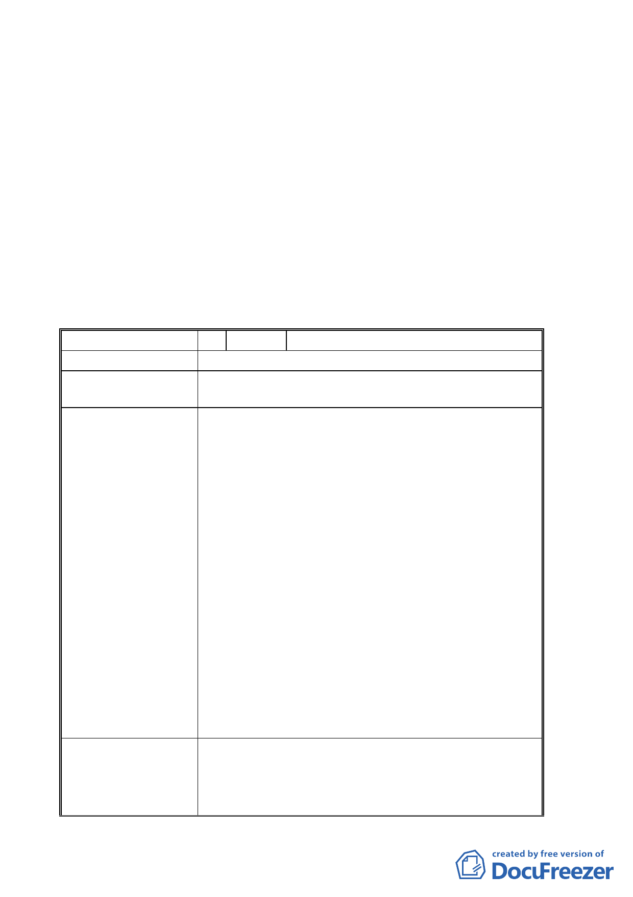

二、 細部計畫：依本次會議市府所送修正後計畫書圖內容先予通
過；惟其後續實質開發依涉及之水土保持、交通影響、都市設
計、環境影響評估等各項審查結果辦理，以確保其彈性。
三、 另本案討論時，邊委員泰明依各級都市計畫委員會組織規程第
11 條規定，自行迴避未出席會議討論。
四、 有關公民或團體陳情意見決議情形詳如綜理表。
「變更臺北市文山區指南山莊機關用地為大專用地（國立政治大學）及保
護區主要計畫案」及「擬定臺北市文山區指南山莊大專用地（國立政治大
學）細部計畫案」
臺北市都市計畫委員會公民或團體所提意見綜理表
編 號 １ 陳情人 黃嘉良、張會珍
陳 情 理 由 變更校地，其土地價值提高，應規定回饋比例。
建 議 辦 法 建議回饋 30%可建築用地或相等比例之代金，且用於回饋
萬興里民。
申請單位回應意見 1. 指南山莊由機關用地變更為大專用地後，係提供
政治大學使用，在權屬上屬於公有土地，並未有
土地價值提高的情形，不適用變更回饋相關規定。
2. 指南山莊機關用地變更為大專用地後，對附近地
區居民的效益及回饋如下：
（1）解除軍事管制，提供校園開放空間供鄰近居
民使用。
（2）兼顧水土、生態景觀資源及公共安全，以生
態永續、開放式設計為規劃原則，運用指南山
莊自然資源結合現有老樹劃設生態景觀區。
（3）規劃停車空間，提供部分車位供鄰近居民使
用。
（4）指南山莊北側及西側退縮 5 公尺建築，提供
更多人行空間。
（5）結合指南山莊納入政治大學校園整體規劃並
推動都市更新，提供改善木柵、貓空地區都市
景觀、交通問題及促進都市整體發展之機會。
委員會決議 一、依本案專案小組審查意見，將全數機關用地變
更為大專用地（供國立政治大學使用），並依本
次會議市府所送修正後計畫書圖及補充會議資
料通過。
-6-